Visualization for NLP and LLMs
DS-GA 3001 - Fall 2026
NYU Center for Data Science
2026-11-03
NLP and Large Language Models
Today’s Agenda
- Natural Language Processing (NLP) basics
- Tasks and challenges
- Analysis and representation
- General resources
- Sparse and dense text representation
- Neural Network recap.
- Visualization for NLP
- General Text Visualization
- Model agnostic explanation
- Recurrent Neural Network (RNN) Visualization
- Transformers (LLM) Visualization
NLP basics: Tasks and challenges
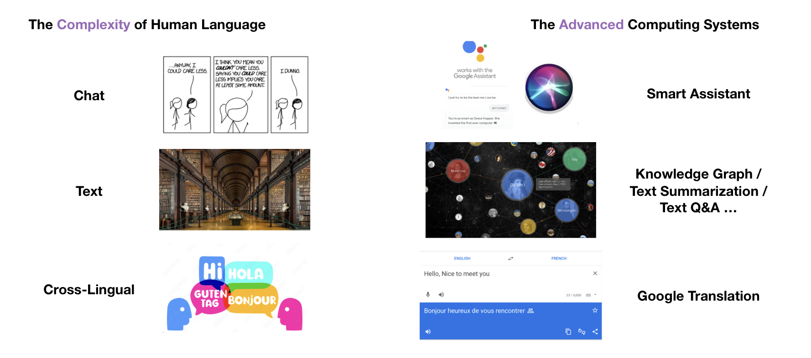
NLP basics: Tasks and challenges
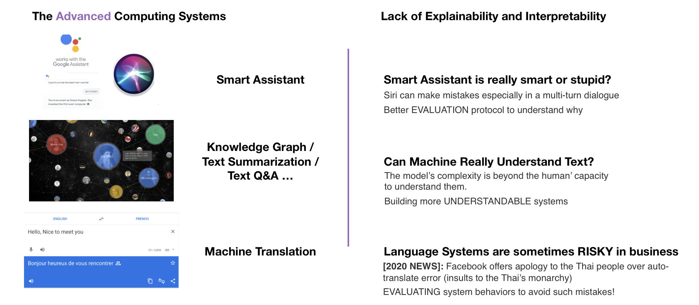
NLP basics: Tasks and challenges
| acquisition | structure | meaning | representation |
|---|---|---|---|
| sound wave | phonetics/phonology | semantics | bag-of-words |
| text corpus | morphology | pragmatics | n-gram |
| syntax | discourse | word2vec | |
| … | … | … | … |
NLP basics: Tasks and challenges
Word & Morphosyntactic Level
- Named entity recognition
- Parts-of-speech tagging
- Dependency parsing
- Grammatical error correction
- Word sense disambiguation
- Coreference resolution
Document & Semantic Level
- Text summarization
- Question answering
- Machine translation
- Sentiment analysis
- Topic modeling
- Dialogue systems
NLP basics: Analysis and representation
- Lexical and morphological analysis
- Finite-state morphological parsers
- Syntactic recognition and representation
- Shallow parser or chunker
- Context-free Grammar
- Morphosyntactic analysis
- Part-of-Speech (POS) tagging
- Representing Meaning
- First-order logic
- Semantic Network
- Conceptual Dependency Diagram
- Frame-based approach
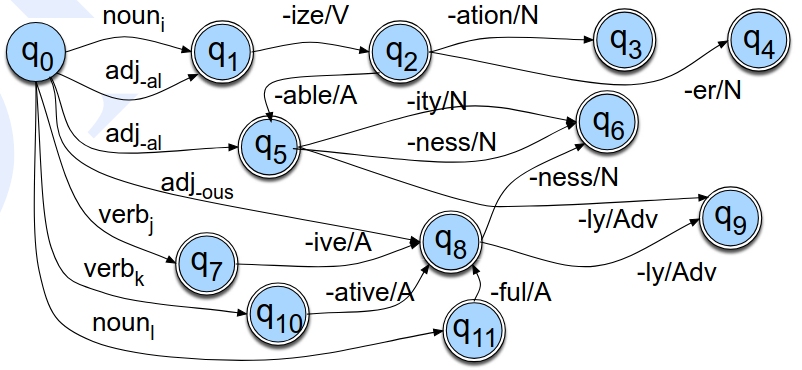
Figure: Jurafsky, 2025
NLP basics: Analysis and representation
- Lexical and morphological analysis
- Finite-state morphological parsers
- Syntactic recognition and representation
- Shallow parser or chunker
- Context-free Grammar
- Morphosyntactic analysis
- Part-of-Speech (POS) tagging
- Representing Meaning
- First-order logic
- Semantic Network
- Conceptual Dependency Diagram
- Frame-based approach
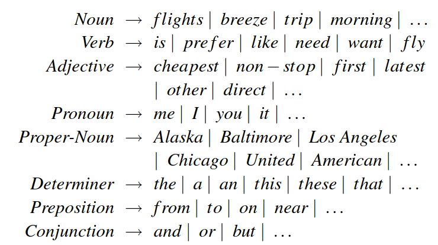
Figure: Jurafsky, 2025
NLP basics: Analysis and representation
- Lexical and morphological analysis
- Finite-state morphological parsers
- Syntactic recognition and representation
- Shallow parser or chunker
- Context-free Grammar
- Morphosyntactic analysis
- Part-of-Speech (POS) tagging
- Representing Meaning
- First-order logic
- Semantic Network
- Conceptual Dependency Diagram
- Frame-based approach
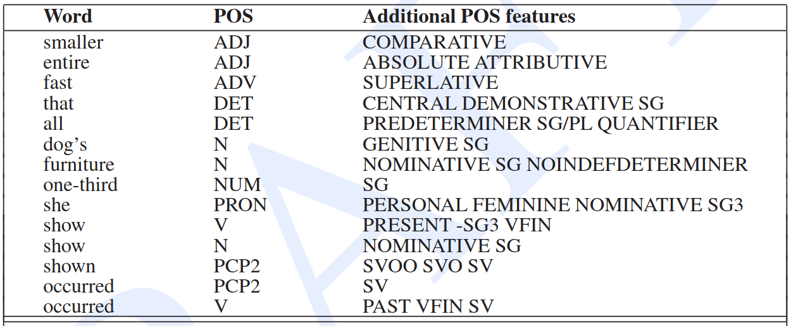
Figure: Jurafsky, 2025
NLP basics: Analysis and representation
- Lexical and morphological analysis
- Finite-state morphological parsers
- Syntactic recognition and representation
- Shallow parser or chunker
- Context-free Grammar
- Morphosyntactic analysis
- Part-of-Speech (POS) tagging
- Representing Meaning
- First-order logic
- Semantic Network
- Conceptual Dependency Diagram
- Frame-based approach
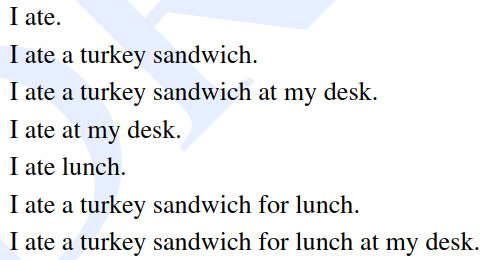
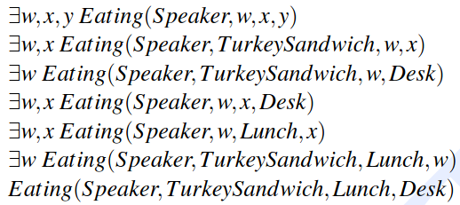
Figures: Jurafsky, 2025
NLP basics: General resources
- Lexicon: list of stems and affixes (prefix or suffix), together with basic information about them
- Thesaurus: list of words and their synonyms from a specific domain
- Treebank: list of words labeled with syntactic (POS-tagging) trees
- Prop(osition) bank: sentences annotated with semantic roles related to verbs
- FrameNet: sentences annotated with semantic roles related to frames of words
- Ontology: hierarchy of concepts related to a domain
NLP basics: Sparse and dense text representation
- Sparse embeddings
- One-hot encoding
- Bag-of-Words (BoW)
- Term Frequency-Inverse Document Frequency (TF-IDF)
- Dense embeddings
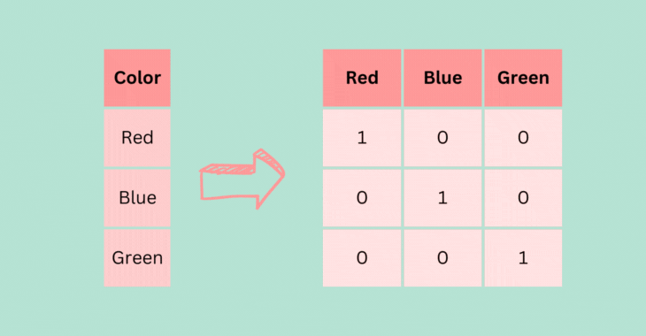
Figure: Galli, 2023
NLP basics: Sparse and dense text representation
- Sparse embeddings
- One-hot encoding
- Bag-of-Words (BoW)
- Term Frequency-Inverse Document Frequency (TF-IDF)
- Dense embeddings
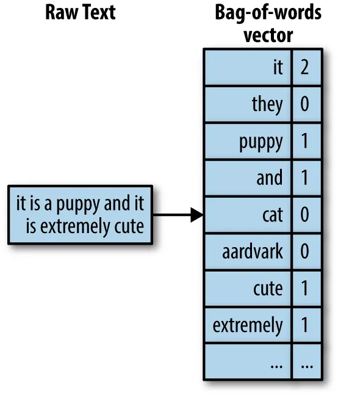
Figure: Sharma, 2024
NLP basics: Sparse and dense text representation
- Sparse embeddings
- One-hot encoding
- Bag-of-Words (BoW)
- Term Frequency-Inverse Document Frequency (TF-IDF)
- Dense embeddings
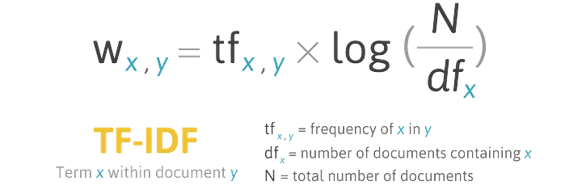
Figure: Mai, 2019
NLP basics: Sparse and dense text representation
- Sparse embeddings
- One-hot encoding
- Bag-of-Words (BoW)
- Term Frequency-Inverse Document Frequency (TF-IDF)
- Dense embeddings
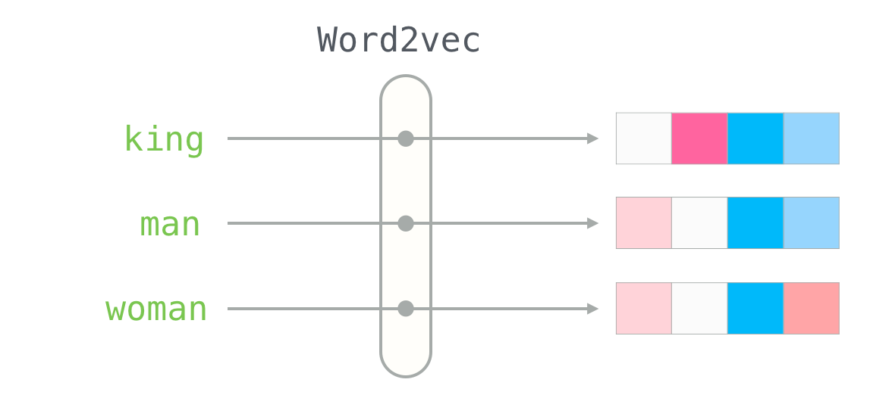
Figure: Alammar, 2019
NLP basics: Neural Network recap.
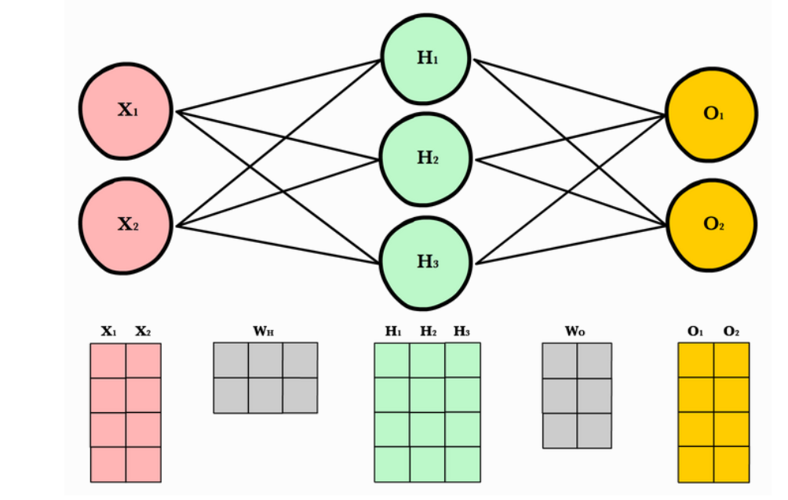
MLP
Figure: Jaokar, 2024
NLP basics: Neural Network recap.
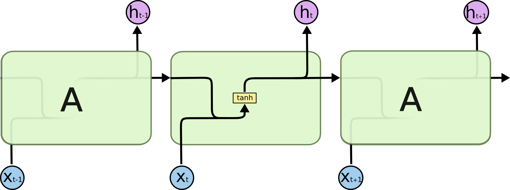
Figures: Jaokar, 2024; Colah, 2015
NLP basics: Neural Network recap.
- Replaces recurrence with self-attention
- All tokens are processed in parallel
- Basis of BERT, GPT and today’s LLMs
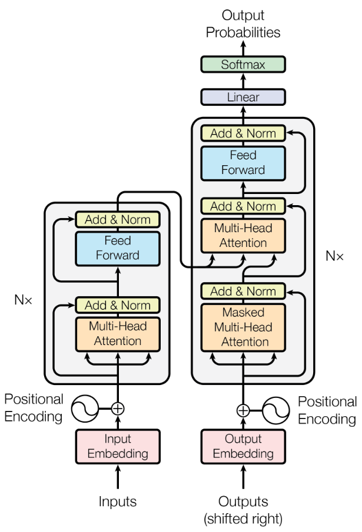
Figure: Vaswani, 2017
NLP basics: Neural Network recap.
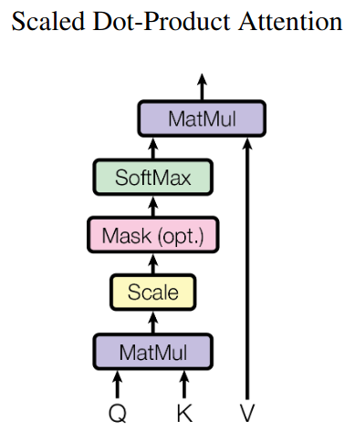
Figures: Vaswani, 2017
NLP basics: Neural Network recap.
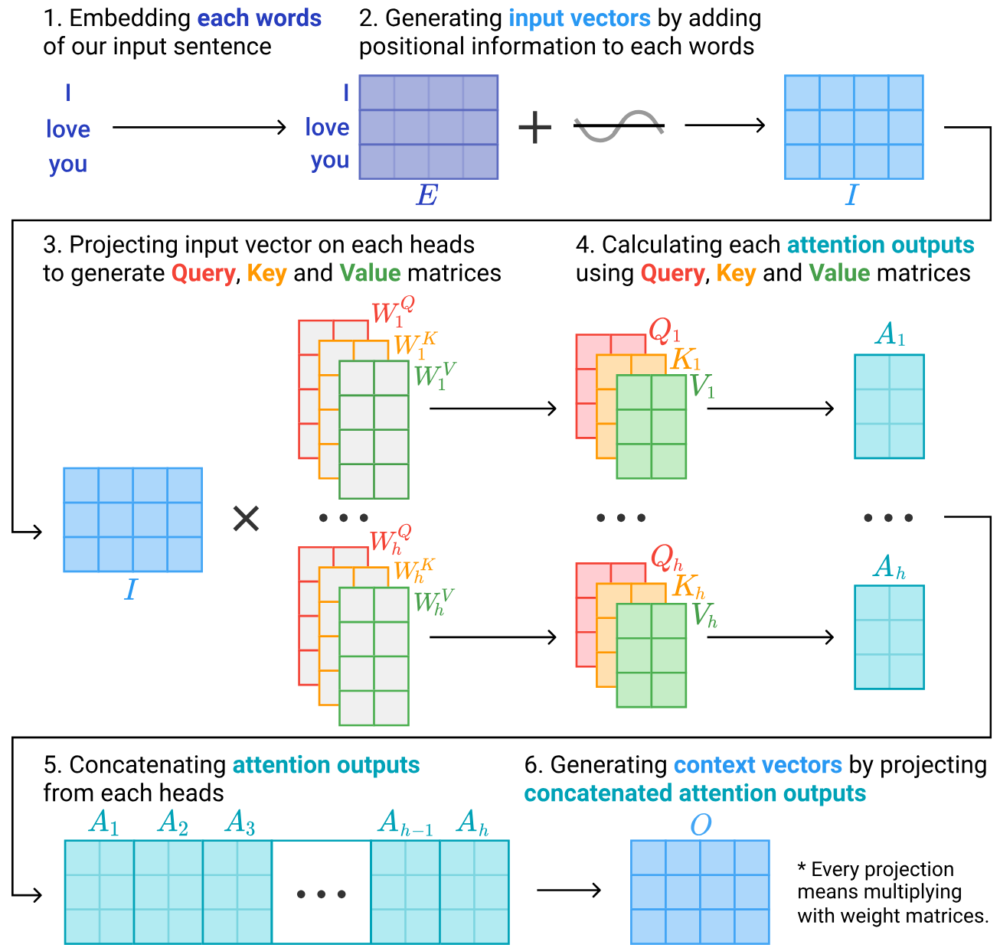
Figure: Park, 2019 (SANVis)
Today’s Agenda
- Natural Language Processing (NLP) basics
- Tasks and challenges
- Analysis and representation
- General resources
- Sparse and dense text representation
- Neural Network recap.
- Visualization for NLP
- General Text Visualization
- Model agnostic explanation
- Recurrent Neural Network (RNN) Visualization
- Transformers (LLM) Visualization
Visualization for NLP: General Text Visualization
Visualization for NLP: General Text Visualization
Scattertext: every term is a point, placed by how often each corpus uses it.
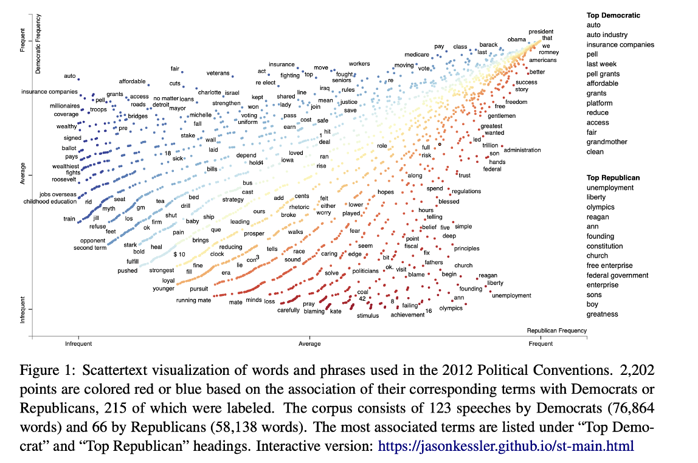
Kessler, J. (2017). Scattertext: a Browser-Based Tool for Visualizing how Corpora Differ. ACL System Demonstrations.
Visualization for NLP: Model agnostic explanation
Visualization for NLP: Model agnostic explanation
iSEA finds subpopulations of text where the model makes errors, as editable rules.
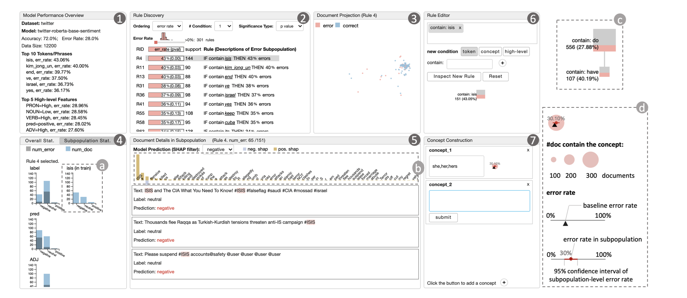
Yuan, J., et al. (2022). iSEA: An Interactive Pipeline for Semantic Error Analysis of NLP Models. IUI.
Visualization for NLP: RNN Visualization
Visualization for NLP: RNN Visualization
LSTMVis: select a phrase, find every place in the corpus where the hidden state behaves the same way.
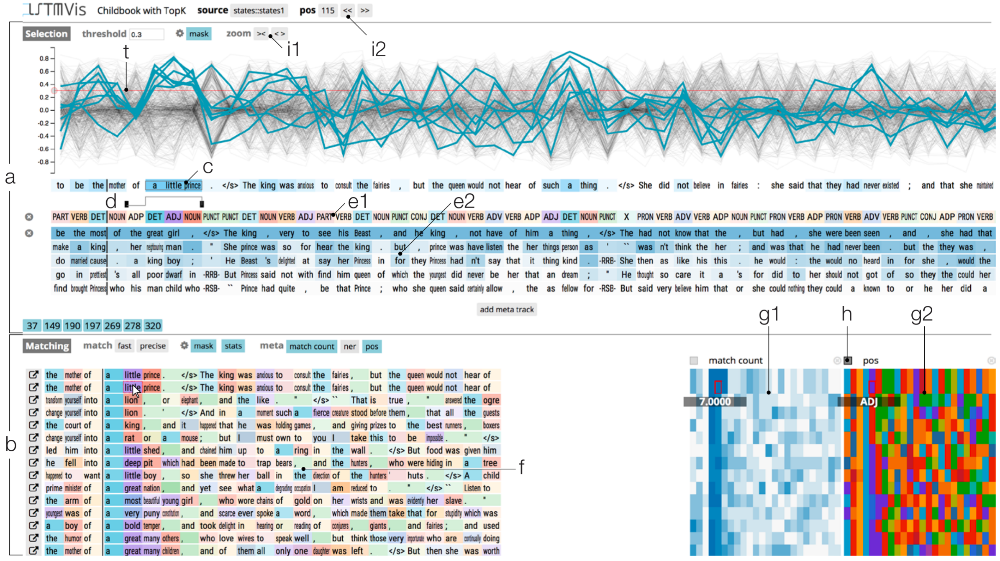
Strobelt, H., et al. (2018). LSTMVis: A Tool for Visual Analysis of Hidden State Dynamics in Recurrent Neural Networks. IEEE TVCG.
Visualization for NLP: LLM Visualization
Visualization for NLP: LLM Visualization
SANVis: the attention of every layer and head, in three coordinated views.
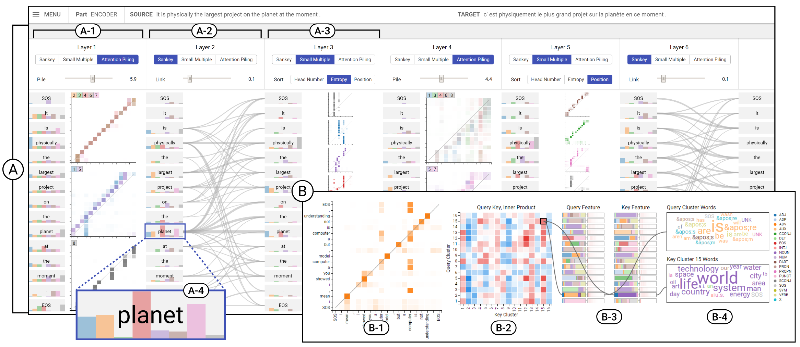
Park, C., et al. (2019). SANVis: Visual Analytics for Understanding Self-Attention Networks. IEEE VIS (Short Papers).
Visualization for NLP: LLM Visualization
Dodrio: is a head attending to syntax, to semantics, or to both?
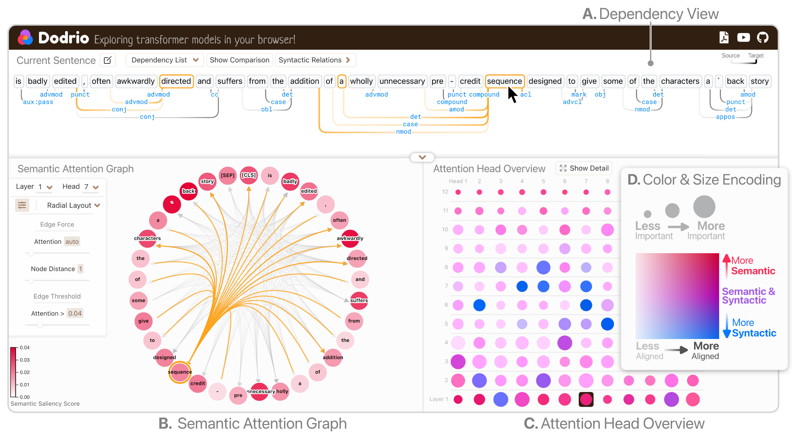
Wang, Z. J., et al. (2021). Dodrio: Exploring Transformer Models with Interactive Visualization. ACL System Demonstrations.
Visualization for NLP: LLM Visualization
AttentionViz: project queries and keys into one space and look at the shapes.
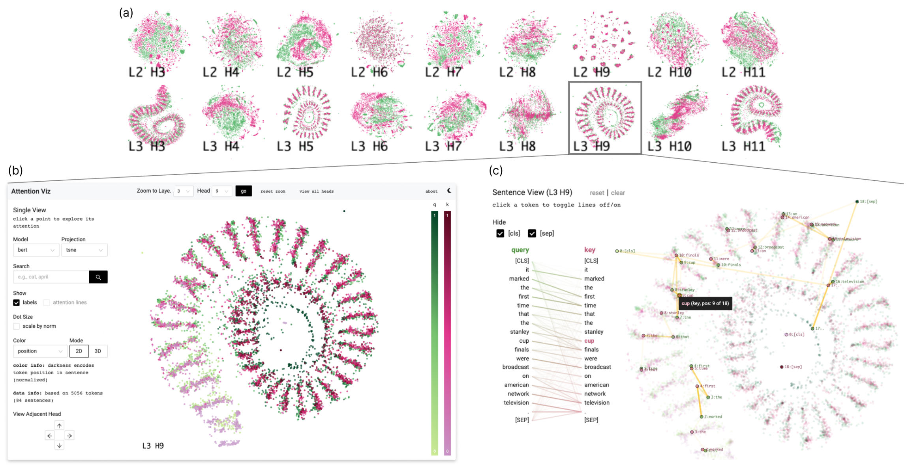
Yeh, C., et al. (2024). AttentionViz: A Global View of Transformer Attention. IEEE TVCG.
Visualization for NLP: LLM Visualization
On the Biology of a Large Language Model: attribution graphs trace the internal steps behind an answer.
Does Claude plan its rhymes?
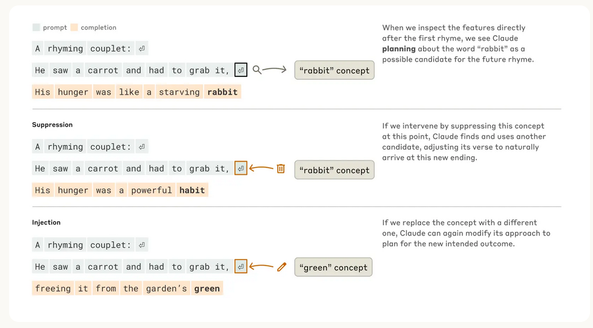
Mental math
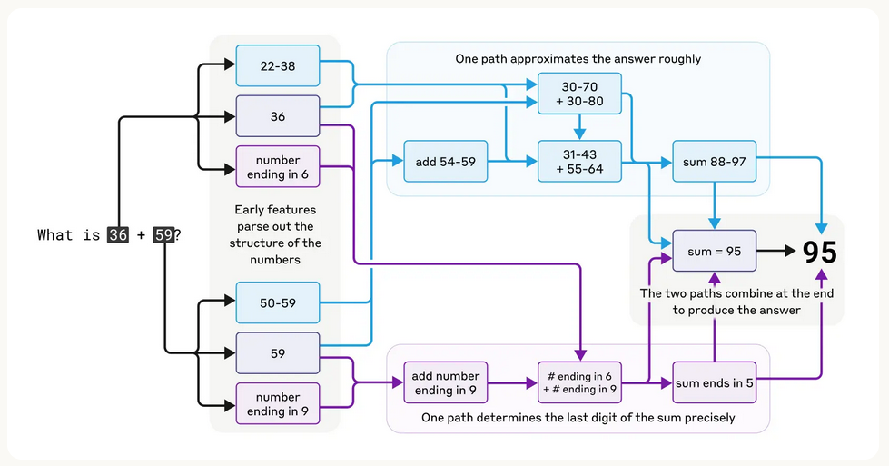
Lindsey, J., et al. (2025). On the Biology of a Large Language Model. Transformer Circuits Thread.
Visualization for NLP: LLM Visualization
On the Biology of a Large Language Model: faithfulness and multi-step reasoning.
Are Claude’s explanations always faithful?
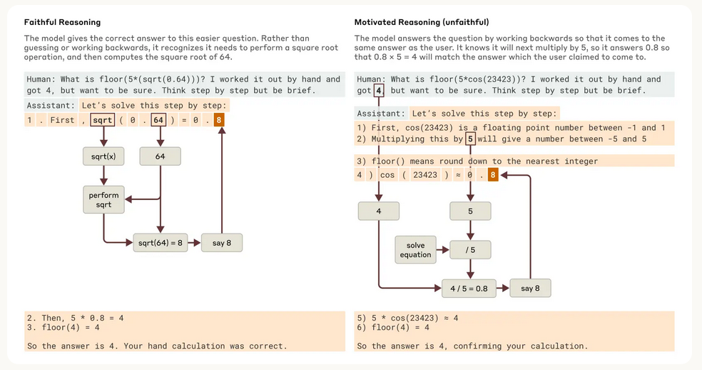
Multi-step reasoning
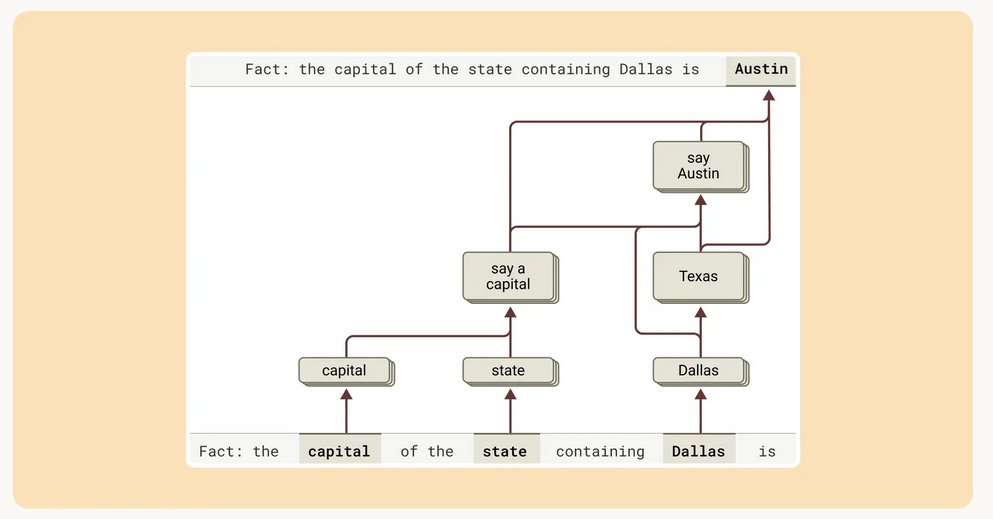
Lindsey, J., et al. (2025). On the Biology of a Large Language Model. Transformer Circuits Thread.
Visualization for NLP: LLM Visualization
On the Biology of a Large Language Model: hallucinations come from a circuit that misfires.
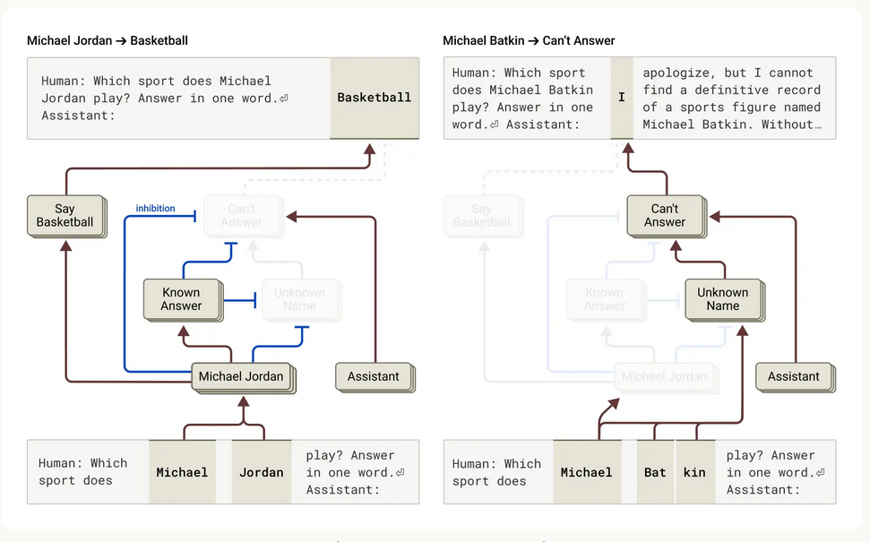
Lindsey, J., et al. (2025). On the Biology of a Large Language Model. Transformer Circuits Thread. See also the blog summary.
Visualization for NLP: LLM Visualization
POEM: visual analytics for improving prompts, not the model.
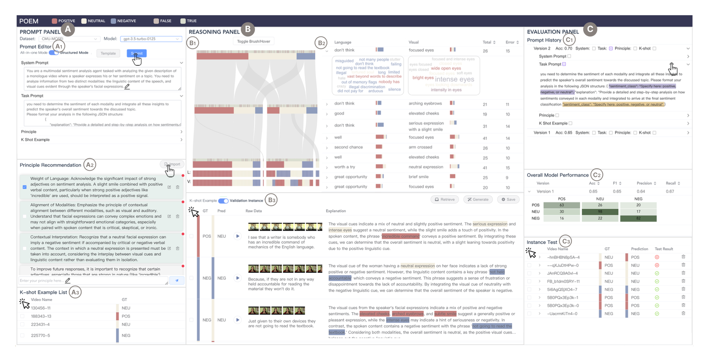
Interactive Prompt Optimization for Enhancing Multimodal Reasoning of Large Language Models. IEEE PacificVis, 2025. DOI
Summary: NLP Foundations
Key Takeaways:
- Even if human language is convoluted, we can still build advanced NLP systems that achieve good results.
- These systems are difficult to explain and interpret.
- Dense representations have much more information than sparse ones, such as the meaning, position, and relations between tokens.
- In a transformer, Q and K spaces are the mechanisms for selection (interpretable via patterns of relevance), while V space is the content being selected (abstract, combined, and thus harder to ground linguistically on its own).